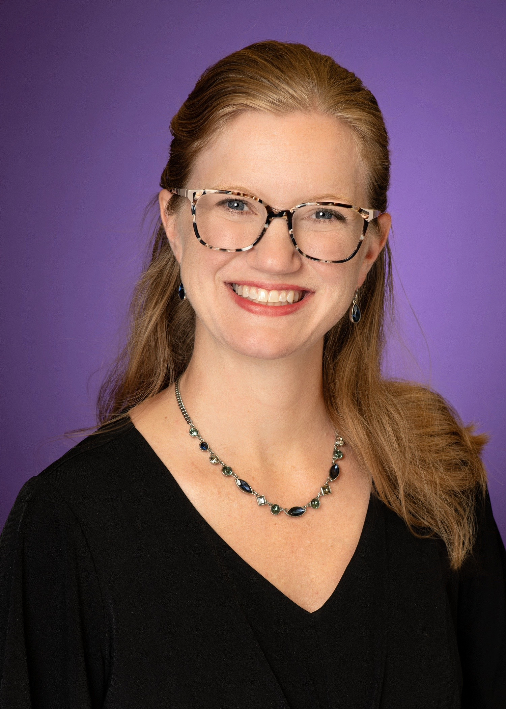

In Action
The people behind the work
Research here is hands-on and collaborative — undergraduates, graduate students, and faculty partners working side by side at the bench.

Dr. Mikaela Stewart
Principal Investigator · Department of Biology, TCU
Dr. Stewart leads the lab's work on the structure and function of BRCA1 and its role in cancer risk, supported by the National Institutes of Health and TCU. She mentors students through every stage of real research — from purifying proteins to publishing — and is committed to making that science clear to people far outside the lab.
I thrive from passing on my excitement for science and inclusive teaching when mentoring and training others. My laboratory uses biochemistry, structural biology, genetics and cancer cell biology techniques to study protein function, design novel therapeutics, and inform on breast cancer genetic risks. My classroom employs evidence-based strategies and active inquiry to teach ALL students how to think like scientists. I enjoy collaborating on research and teaching so if our interests align in either please message me!
Life in the lab
Science, and the people doing it
From the McCracken Symposium here in Fort Worth to national meetings in San Antonio, San Francisco, and just outside DC — plus the occasional very nerdy game night. Tap any photo to enlarge.
Alumni
Where are they now?
Where our Master’s students have headed after the Stewart Lab.
Christine Hurd
Earned her DO at the UNT Health Science Center and is now a psychiatry resident at JPS.
Ishor Thapa
An oncology PhD candidate at the Huntsman Cancer Institute, University of Utah School of Medicine.
Russell Vahrenkamp
A physician assistant (PA) student at the University of Texas Medical Branch.
Chrissy Baker
A PhD student in Human Genetics and Genomics at the University of Miami Miller School of Medicine.
Jamison Speed
A genetic counseling assistant in the Cancer Genetics department at UT Southwestern Medical Center.
Meagan McMann
Staying in the Stewart Lab as our very first PhD student!
Want to be on this page?
The lab takes on motivated students — including undergraduates new to research.